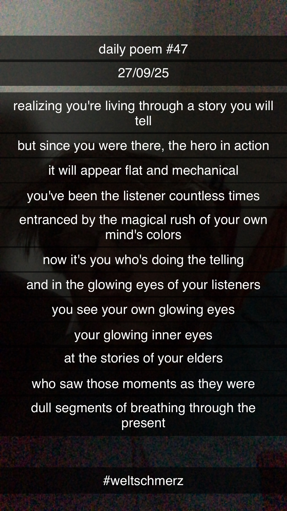

Weltschmerz
realizing you're living through a story you will tell,
but since you were there – the hero in action –
it will appear flat and mechanical;
you've been the listener countless times,
entranced by the magical rush of your own mind's colors –
now it's you who's doing the telling
and in the glowing eyes of your listeners
you see your own glowing eyes –
your glowing inner eyes –
at the stories of your elders
who saw those moments as they were:
dull segments of breathing through the present.
